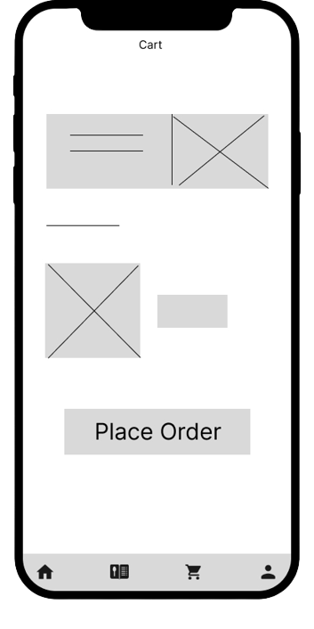
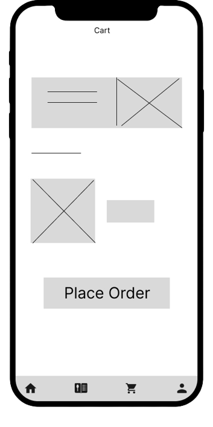

Foody - Food delivery app and website

Foody is an app and website designed for food delivery, where users can choose from different types of restaurants according to their needs and preferable diets
Project Overview
I conducted interviews and created empathy maps to understand who are primary users of the app. The primary users identified to be working adults as well as students. The majority of users have busy schedules that leave the unable to cook and prepare meals themselves. The second pain point was accessibility for people who don’t have knowledge in technology due to their age.
Starting the Design
At first I started with paper wireframes to create user flow that would easy and practical.
After creating paper wireframes, next step were digital wireframes and low-fidelity prototype.
 

Refining the Design
Usability study showed that users would like to have access to order detail and order status, so that was added to the design.
Website
Foody also has website in work for users that use desktop and tablet more.
Takeaway
I think Foody can be next useful food delivery platform. I think it makes users feel confident and comfortable while using it.